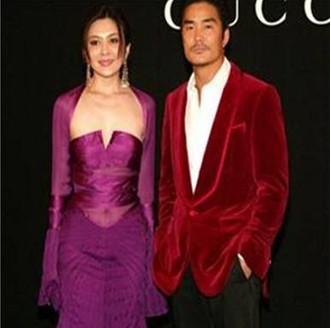
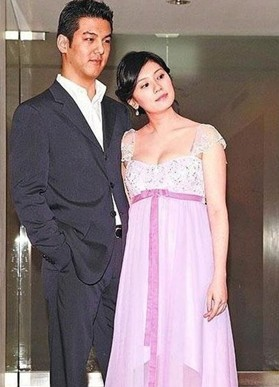

娱记秀五子棋
#1 娱记秀五子棋 作者：茗弈宽容 发表时间：2010-1-8 11:27:44
无意在网上看到下面文章，没想到娱记们对五子棋有了新的理解，值得一品
李嘉欣梁洛施跻身豪门贵妇的棋盘法则
刘銮雄、许晋亨、何鸿燊等有权有势的富豪名流各个都是风月场中的高手，收复女星手段多多，譬如投美女所好赠送BIRKIN；奉上香车豪宅；报刊示爱；天价拍下爱情车牌，但反言之女星对豪门更是想入非非，花样翻新，一山更比一山高，堪比五子棋中的吐纳对峙。

第一招：卖弄风情
五子棋之交换思维
代表人物：关之琳、黎姿
关之琳很美，很懂得卖弄风情，用风情来交换别人流连的眼神，当然风情不是贬义词，而是在最恰当的时机出手表白魅力。她年轻时的发型选择特别有酶活力，总是斜刘海遮住一边耳朵散发女人风情，甜甜一笑沁人心脾，一下就迷倒了富豪，所以富豪愿意用金钱去交换来这份“纸醉金迷”，这就是所谓五子棋的“交换”思维；别看如今的黎姿的举手投足之间都蕴含风情万千，很有女人味，刚出道时愣头愣脑很像假小子，但富豪不喜欢假小子，春哥曾哥都得靠边站，因此越擅长卖弄风情越善于显示柔情的女星越容易迈进豪门贵妇的门槛，黎姿长大后对此潜规谙熟于心，飘逸的长发桃花般的媚眼，一扫假小子的姿态，用一颦一笑装束自己。
第二招：缩短距离
五子棋之“井字”原理
代表人物：刘涛、梁洛施
刘涛和梁洛施都是二线女星，姿色绝非上上乘，她们能驾驭的了富豪实在令人出乎意料，在交往一月之内就能让富豪倾心乖乖束手就擒，这就得益于她们使用的五子棋中的井字原理，说穿了就是缩小棋盘，将富豪划入一个圈圈里，用孙悟空的金箍棒画了一个圈！刘涛在地下停车场结识了她的真命天子，一个月就速战速决，说明她擅长营造暧昧，制造人与人容易产生感情的场景，不偏不倚地巧遇、一见钟情……这些外表内向但内心大胆的女孩惯用的；梁洛施卖身英皇苦不堪言，欲求翻身却不能，她叛逆所以被雪藏，此时邂逅年长自己二十多岁的李泽楷，她的弱让强势的他愿当护花使者，于是乎跌入她的空间，被她“叛逆”的思维方式感染，这等于梁洛施用思想绑架了李泽楷，所以羊爱上狼，狼爱上羊，她的上位轻而易举。

第三招：冤家路窄
五子棋之“跷跷板”原理
代表人物：贾静雯
你打一枪我放一炮，冤家路窄，有理有据，贾静雯入豪门就合乎此原理，但是此原理虽能维持一时，却难维持一世。孙志浩与贾静雯性情相冲，他是出名的花心大萝卜，喜欢泡夜店；她绯闻一大堆，也不是个清心寡欲的人，他当初只是看上她仅仅是被美貌和娇憨“勾引”，以新鲜感为名义的两个人爱的死去活来，贾静雯女儿出生，她的豪门梦在短短时间内就实现了，但冤家注定是冤家，三天两头会大动干戈，没过几年就闹的劳燕分飞丑态毕露，因为他们个性相冲，谁也灭不了谁，这种跷跷板你追我赶的方法也很符合时下冤家型恋人的恋爱原则，不闹不过瘾。
第四招：看破红尘
五子棋之“泡沫”原理
代表人物：李嘉欣
蓄势待发绝对不能吃定一个人，施力越大反弹越大，厚积薄发才能瓦解一个人，让他服服帖帖把自己娶进门，比方李嘉欣就是泡沫原理之高手，简直攻无不克战无不胜。许晋亨与刘嘉玲婚礼在即却不幸夭折，陈法蓉与许晋亨街头秀恩爱梦醒时分还是各奔东西，往来穿梭诸多富豪之间的李嘉欣却能轻松吃定许晋亨，这是因为她吸收教训转换为经验，不像曾经傻乎乎与刘銮雄太太电话对骂弄的身败名裂，也不会与庞维仁再纠缠不清，而是全心全意用她的美丽和调皮征服同老婆藕断丝连的许晋亨，这就说明她之前做足了功夫，一点一滴，化作智慧雨，三十八岁依然抢手依然被富豪追捧，风风光光站做着俯视天下的女王。
泡沫原理是全新的思维，有助于多多游戏美女化繁为简开拓思路，如果有美女运用好此原理，恐怕离最终的胜利就不再遥远了。
延伸五子棋的四大法则能在胜利的终点展开笑颜，也是人生一场幸事，运用头脑，开启智慧，做主宰命运的赢家。
&nb
#2 Re:娱记秀五子棋 作者：新柳如慧 发表时间：2010-1-8 13:10:50
这个这个，不能这么联系吧